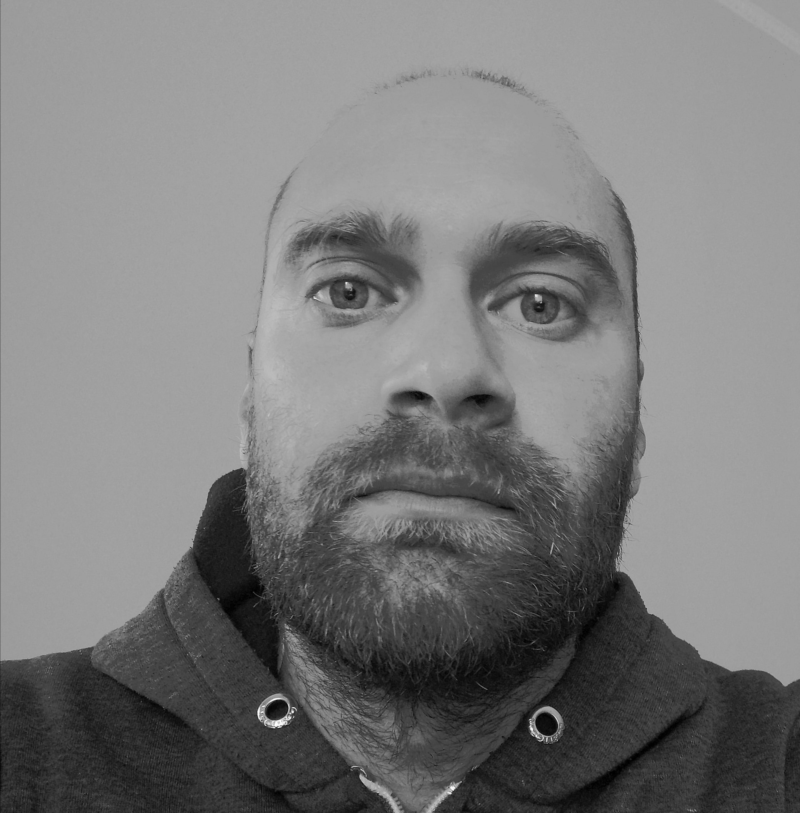

Contatti
○ Tel-3477633449
○ Email- felicimirko@hotmail.it
○ Indirizzo- C.da colle perino-Subiaco(RM)
Mirko Felici
• Esperienze lavorative e professionali
○ Operaio edile specializzato - Impresa edile Felici Alessandro-Cervara di Roma(RM)
○ Pulizia ecura dei macchinari al fine di garantirne un utilizzo ottimale
○ Uso corretto delle attrezzature e dei materiali in conformità alle normative sulla sicurezza
○ Montaggio e smontaggio di impalcature,ponteggi e transenne per coadiuvare le attività di costruzione
○ Preparazione dei cantieri e messa in sicurezza degli operai e del pubblico
○ Manutenzione ordinaria e straordinaria presso condominio in montagna
○ Discrete capacità nell'uso degli attrezzi da lavoro in generale
○ Pittura,giardinaggio,pulizie,portierato e pulizia neve attraverso mezzi specifici
• Profilo Professionale
○ Forte determinazione alla crescita professionale.Può contare su una buona competenza e sa inserirsi rapidamente in nuove organizzazioni di lavoro grazie a buone doti comunicative,predisposizione al lavoro di squadra e attitudine positiva e propositiva
○ Predisposizione nel maneggiare e manovrare attrezzature e mezzi di lavoro manuali
○ Appassionato del mondo informatico e tecnico
○ Fascino e ammirazione per il mondo della sicurezza,della vigilanza e nel fornire supporto agli altri
• Competenze e capacità
○ Uso di attrezzi manuali
○ Uso del carrello elevatore
○ Salute e sicurezza sul lavoro
○ Configurazione dei dispositivi
○ Installazioni e riparazioni smartphone
○ Capacità analitiche e problem solving
○ Spiccata flessibilità e capacità organizzative
○ Attitudine al lavoro di squadra
○ Competenze sistema operativo Windows
• Studi e formazione
○ 2008 Diploma perito elettrotecnico presso Itis G.Quarenghi (Subiaco(RM))
○ 2012 Attestato di tecnico riparatore celluare
○ 2020 Corso di formazione come programmatore java,in attesa di sostenere l esame Oracle
○ 2021 Attestato addetto alla manutenzione e gestione di siti web
○ Attestato di addetto antincendio alto rischio con abilitazione tecnica conseguita presso vvf
• Competenze linguistiche
○ Italiano - Madrelingua
○ Inglese - Livello base
○ Spagnolo - Livello base